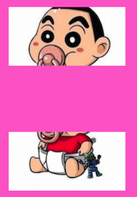
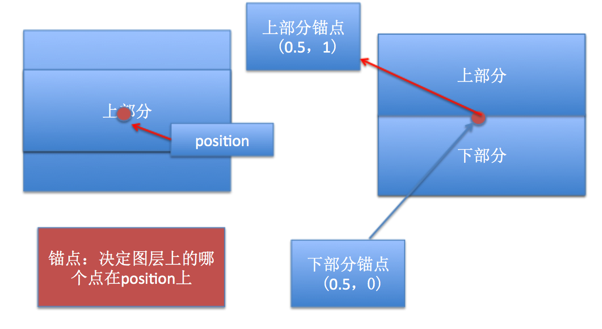

注意：核心动画一切都是假象，并不会真实的改变图层的属性值，如果以后做动画的时候，不需要与用户交互，通常用核心动画（转场）。 UIView动画必须通过修改属性的真实值，才有动画效果。
把一张图片分成两部分显示，上面一部分，下面一部分，折叠上面部分的内容。
搞两个控件，一个显示上半部分，一个显示下半部分，需要用到Layer(图层)的一个属性contentsRect,这个属性是可以控制图片显示的尺寸，可以让图片只显示上部分或者下部分，注意:取值范围是0~1.
CGRectMake(0, 0, 1, 0.5) : 表示显示上半部分
CGRectMake(0, 0.5, 1, 0.5) : 表示显示下半部分

3.1 首先了解折叠，折叠其实就是旋转，既然需要旋转就需要明确锚点，因为默认都是绕着锚点旋转的。
3.2 上部分内容绕着底部中心旋转，所以设置上部分的锚点为（0.5，1）
3.3 锚点设置好了，就可以确定位置了.
3.4 可以把上下部分重合在一起，然后分别设置上下部分的锚点，
上部分的锚点为（0.5，1），下部分的锚点为（0.5，0）,就能快速重叠了。

在拖动视图的时候，旋转上部分控件。修改transform属性。
拖动控件尺寸就是完整的图片尺寸），给这个控件添加一个pan手势，就能制造一个假象，拖动控件的时候，折叠图片。angle = offsetY * M_PI / 200;逆时针旋转，因此角度需要为负数。
```objc(void)awakeFromNib { _topImgView.layer.contentsRect = CGRectMake(0, 0, 1, 0.5); _topImgView.layer.anchorPoint = CGPointMake(0.5, 1);
_bottomImgView.layer.contentsRect = CGRectMake(0, 0.5, 1, 0.5); _bottomImgView.layer.anchorPoint = CGPointMake(0.5, 0);
// 渐变图层 CAGradientLayer *gradientLayer = [CAGradientLayer layer]; // 图层设置尺寸 gradientLayer.frame = self.bottomImgView.bounds; gradientLayer.opacity = 0; gradientLayer.colors = @[(id)[UIColor clearColor].CGColor,(id)[UIColor blackColor].CGColor]; _gradientLayer = gradientLayer; [self.bottomImgView.layer addSublayer:gradientLayer]; }
(IBAction)pan:(UIPanGestureRecognizer)pan { // 获取偏移量 CGPoint point = [pan translationInView:self]; // 计算折叠角度，因为需要逆时针旋转，所以取反 CGFloat angle = -point.y / 200 M_PI; // 初始化形变 CATransform3D transform = CATransform3DIdentity;
// 增加旋转的立体感，近大远小,d：距离图层的距离,设置M34就有立体感(近大远小)。 -1 / z,z表示观察者在z轴上的值,z越小，看起来离我们越近，东西越大 transform.m34 = -1 / 500.0; transform = CATransform3DRotate(transform, angle, 1, 0, 0); self.topImgView.layer.transform = transform;
self.gradientLayer.opacity = point.y * 1 / 200.0; if (pan.state == UIGestureRecognizerStateEnded) {
// 反弹 当手指抬起的时候，应该把折叠图片还原，其实就是把形变清空。
[UIView animateWithDuration:0.6 delay:0 usingSpringWithDamping:0.2 initialSpringVelocity:10 options:UIViewAnimationOptionCurveEaseInOut animations:^{
self.topImgView.layer.transform = CATransform3DIdentity;
} completion:^(BOOL finished) {
}];
} } ```
当折叠图片的时候，底部应该有个阴影渐变过程。
CAGradientLayer（渐变图层）制作阴影效果，添加到底部视图上，并且一开始需要隐藏，在拖动的时候慢慢显示出来。透明到黑色渐变,表示阴影从无到有。// 创建渐变图层
CAGradientLayer *shadomLayer = [CAGradientLayer layer];
// 设置渐变颜色
shadomLayer.colors = @[(id)[UIColor clearColor],(id)[[UIColor blackColor] CGColor]];
shadomLayer.frame = _bottomView.bounds;
_shadomLayer = shadomLayer;
// 设置不透明度 0
shadomLayer.opacity = 0;
[_bottomView.layer addSublayer:shadomLayer];
// 设置阴影不透明度
_shadomLayer.opacity = transP.y * 1 / 200.0;
if (sender.state == UIGestureRecognizerStateEnded) { // 手指抬起
// 还原
[UIView animateWithDuration:0.5 delay:0 usingSpringWithDamping:0.1 initialSpringVelocity:3 options:UIViewAnimationOptionCurveEaseInOut animations:^{
_topView.layer.transform = CATransform3DIdentity;
// 还原阴影
_shadomLayer.opacity = 0;
} completion:nil];
}
创建3个layer，按顺序播放y轴缩放动画
1、什么是CAReplicatorLayer？
一种可以复制自己子层的layer,并且复制出来的layer和原生子层有同样的属性，位置，形变，动画。
2、CAReplicatorLayer属性
instanceCount: 子层总数（包括原生子层）instanceDelay: 复制子层动画延迟时长instanceTransform: 复制子层形变(不包括原生子层)，每个复制子层都是相对上一个。instanceColor: 子层颜色，会和原生子层背景色冲突，因此二者选其一设置。instanceRedOffset、instanceGreenOffset、instanceBlueOffset、instanceAlphaOffset: 颜色通道偏移量，每个复制子层都是相对上一个的偏移量。1.首先创建复制layer,音乐振动条layer添加到复制layer上，然后复制子层就好了。
CAReplicatorLayer *layer = [CAReplicatorLayer layer];
layer.frame = CGRectMake(50, 50, 200, 200);
layer.backgroundColor = [UIColor lightGrayColor].CGColor;
[self.view.layer addSublayer:layer];
2.先创建一个音量振动条，并且设置好动画,动画是绕着底部缩放，设置锚点
CALayer *bar = [CALayer layer];
bar.backgroundColor = [UIColor redColor].CGColor;
bar.bounds = CGRectMake(0, 0, 30, 100);
bar.position = CGPointMake(15, 200);
bar.anchorPoint = CGPointMake(0.5, 1);
[layer addSublayer:bar];
CABasicAnimation *anim = [CABasicAnimation animation];
anim.keyPath = @"transform.scale.y";
anim.toValue = @(0.1);
anim.autoreverses = YES;
anim.repeatCount = MAXFLOAT;
[bar addAnimation:anim forKey:nil];
3.复制子层
// 设置4个子层，3个复制层
layer.instanceCount = 4;
// 设置复制子层的相对位置，每个x轴相差40
layer.instanceTransform = CATransform3DMakeTranslation(40, 0, 0);
// 设置复制子层的延迟动画时长
layer.instanceDelay = 0.3;
1.创建复制图层
CAReplicatorLayer *replicator = [CAReplicatorLayer layer];
replicator.frame = CGRectMake(50, 50, 200, 200);
replicator.backgroundColor = [UIColor redColor].CGColor;
[self.view.layer addSublayer:replicator];
2.创建一个矩形图层，设置缩放动画。
CALayer *layer = [CALayer layer];
layer.transform = CATransform3DMakeScale(0, 0, 0);
layer.position = CGPointMake(100, 20);
layer.bounds = CGRectMake(0, 0, 10, 10);
layer.backgroundColor = [UIColor greenColor].CGColor;
[replicator addSublayer:layer];
CGFloat duration = 1;
CABasicAnimation *anim = [CABasicAnimation animation];
anim.keyPath = @"transform.scale";
anim.fromValue = @1;
anim.toValue = @0;
anim.repeatCount = MAXFLOAT;
anim.duration = duration;
[layer addAnimation:anim forKey:nil];
3.复制矩形图层，并且设置每个复制层的角度形变
int count = 20;
CGFloat angle = M_PI * 2 / count;
// 设置子层次数
replicator.instanceCount = count;
// 设置子层形变角度
replicator.instanceTransform = CATransform3DMakeRotation(angle, 0, 0, 1);
4.设置复制动画延长时间（需要保证第一个执行完毕之后，绕一圈刚好又是从第一个执行，因此需要把动画时长平均分给每个子层） 公式:延长时间 = 动画时长 / 子层总数 假设有两个图层，动画时间为1秒，延长时间就为0.5秒。当第一个动画执行到一半的时候（0.5），第二个开始执行。第二个执行完
// 设置子层动画延长时间
replicator.instanceDelay = duration / count;
效果：随机绘制一条路径，点击开始按钮，粒子动画
1.搞个画板绘制路径，自定义view
2.给自定义view添加pan手势，和创建复制图层和圆形图层，只需要设置一次，在awakeFromNib方法中设置。
// 添加pan手势
UIPanGestureRecognizer *pan = [[UIPanGestureRecognizer alloc] initWithTarget:self action:@selector(pan:)];
[self addGestureRecognizer:pan];
// 创建复制图层
CAReplicatorLayer *repLayer = [CAReplicatorLayer layer];
repLayer.frame = self.bounds;
[self.layer addSublayer:repLayer];
// 创建粒子图层
CALayer *layer = [CALayer layer];
layer.cornerRadius = 5;
layer.frame = CGRectMake(-100, 10, 10, 10);
layer.backgroundColor = [UIColor whiteColor].CGColor;
[repLayer addSublayer:layer];
_dotLayer = layer;
3.因为核心动画只能设置一个路径，因此只能创建一个路径，懒加载路径。
- (UIBezierPath *)path
{
if (_path == nil) {
_path = [UIBezierPath bezierPath];
}
return _path;
}
4.在一开始拖动的时候，保存路径起点，设置路径起点，拖动的时候每次添加线到某个点。
CGPoint curP = [pan locationInView:self];
if (pan.state == UIGestureRecognizerStateBegan) {
_startP = curP;
[self.path moveToPoint:_startP];
}
[self.path addLineToPoint:curP];
[self setNeedsDisplay];
5.路径绘制好了，点击开始按钮的时候，添加动画到图层
CAKeyframeAnimation *anim = [CAKeyframeAnimation animation];
anim.keyPath = @"position";
anim.duration = 4;
anim.path = self.path.CGPath;
anim.repeatCount = MAXFLOAT;
[_dotLayer addAnimation:anim forKey:@"anim"];
anim.delegate = self;
6.复制图层
repLayer.instanceCount = 20;
repLayer.instanceDelay = 4 / 20.0;
// 设置子层颜色
repLayer.instanceColor = [UIColor colorWithRed:0 green:1 blue:0 alpha:1].CGColor;
// 设置子层颜色绿色通道偏移量
repLayer.instanceGreenOffset = -0.03;
7.重绘 清空路径，重新绘制，移除图层动画。
_path = nil;
[_dotLayer removeAnimationForKey:@"anim"];
[self setNeedsDisplay];
1.用复制图层实现，搞个UIImageView展示图片，然后复制UIImageView.
2.注意：复制图层只能复制子层，但是UIImageView只有一个主层，并没有子层，因此不能直接复制UIImageView.
3.正确做法:应该把UIImageView添加到一个UIView上，然后复制UIView的层，就能复制UIImageView.
注意：默认A控件是B控件的子控件，那么A控件的层就是B控件的层的子层。
4.但是有问题，默认UIView的层不是复制层，我们想把UIView的层变成复制层，重写+layerClass方法。
+ (Class)layerClass
{
return [CAReplicatorLayer class];
}
5.倒影效果：就是就是把复制图片旋转180度，然后往下平移，最好先偏移在，在旋转。
CAReplicatorLayer *layer = (CAReplicatorLayer *)self.v.layer;
layer.instanceCount = 2;
// 先Y轴偏移
CATransform3D transform = CATransform3DMakeTranslation(0, self.v.bounds.size.height, 0);
// 在旋转
transform = CATransform3DRotate(transform, M_PI, 1, 0, 0);
// 设置复制层的形变
layer.instanceTransform = transform;
// 设置颜色通道偏移量，相等上一个一点偏移量，就是阴影效果
layer.instanceRedOffset = -0.1;
layer.instanceGreenOffset = -0.1;
layer.instanceBlueOffset = -0.1;
layer.instanceAlphaOffset = -0.1;
实现思路:
// 计算小圆半径：随机搞个比例，随着圆心距离增加，圆心半径不断减少。
CGFloat smallRadius = _circleR2 - d / 10;
这里大致介绍下计算思路，不需要太纠结注意：这里不能用绘图，因为绘图内容只要超过当前控件尺寸就不会显示，但是当前形变矩形必须显示在控件之外当圆心距离超过100，就不需要描述形变矩形（并且把之前的形变矩形移除父层），小圆也需要隐藏。
没有超过100，则相反。
// 取消Autoresizing转自动布局
self.view.translatesAutoresizingMaskIntoConstraints = NO;